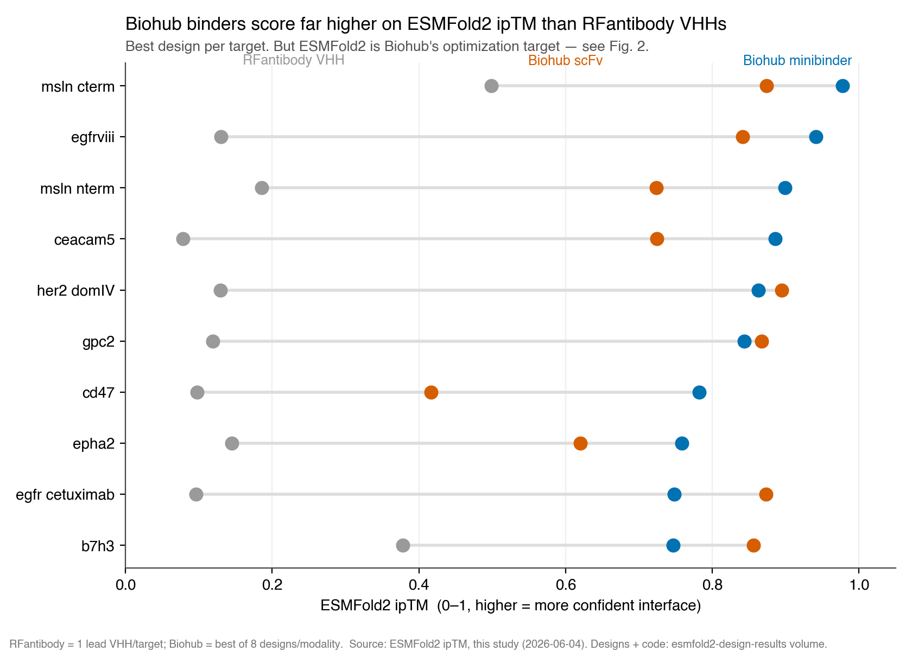
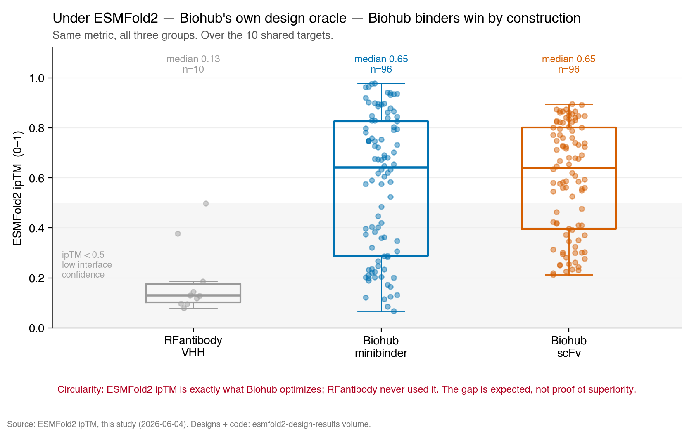
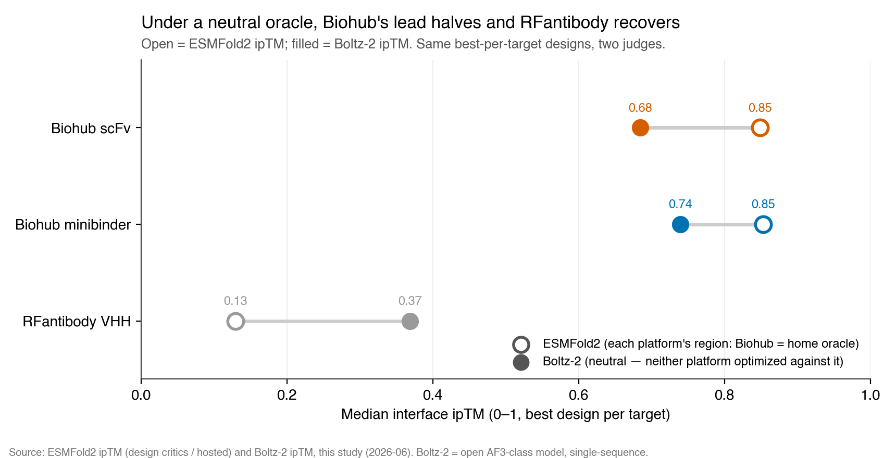

RFantibody vs Biohub ESMFold2: a neutral-oracle face-off
De novo binder design head-to-head — RFantibody VHHs versus Biohub ESMFold2 minibinders & scFvs against challenging cancer antigens
June 2026 — Preprint v1.0
What this is
Two de novo binder design paradigms, on the same antigens. RFantibody (RFdiffusion → ProteinMPNN → RoseTTAFold2) — from our earlier dogfooding run, one lead VHH per target. And Biohub's ESMFold2 protocol, which designs binders by gradient descent over the binder sequence against an ESMFold2 structure objective (predicted inter-/intra-chain contacts), regularized by a down-weighted ESMC-6B language-model term. ESMFold2 is the design model; the 6-billion-parameter ESMC-6B is an auxiliary sequence prior.
We ran the Biohub protocol on 14 antigens, generating minibinders and scFvs, then scored every design with ESMFold2 interface confidence (ipTM). Biohub wins on all 10 shared targets — but we show why that is largely an artifact of who is grading the exam, and settle it with an independent oracle.
By the Numbers
The headline — and the catch
Scored by ESMFold2, Biohub's best design beats the RFantibody VHH lead on every shared target, often by 0.6–0.9 ipTM units (median best ipTM 0.85 for Biohub vs 0.13 for RFantibody).

The catch: evaluation circularity
ESMFold2 ipTM is exactly what the Biohub protocol optimizes. A high score is guaranteed by construction — the precise mirror of our earlier finding that the same RFantibody VHHs sail through RoseTTAFold2's own filters (pLDDT ≈ 0.90) yet score near zero on ESMFold2. Each platform looks excellent under the oracle that built it.

The decisive test: a neutral oracle
To remove home-oracle bias, we re-scored the best design per platform per target with Boltz-2, an open AlphaFold3-class model that neither platform optimized against (RFantibody used RoseTTAFold2; Biohub used ESMFold2). Genuine DeepMind AF3 cannot batch ~200 jobs and its weights are access-gated; Boltz-2 is the runnable, equally independent substitute.

Under a neutral judge, the gap halves — but doesn't vanish
RFantibody designs recover sharply (median ipTM 0.13 → 0.37): ESMFold2 had been unusually harsh on them. Biohub designs fall (0.85 → 0.74 minibinder, 0.69 scFv), directly quantifying home-oracle inflation. Yet Biohub's best design still out-scores the RFantibody lead on 10/10 shared targets — by smaller, more variable margins (on EGFRvIII the RFantibody VHH itself reaches 0.79). The advantage is real, but modest.
Neutral Boltz-2 scores (10 shared targets)
| Target | RFab VHH | Biohub MB | Biohub scFv | Biohub best |
|---|---|---|---|---|
| b7h3 | 0.496 | 0.793 | 0.601 | 0.793 |
| cd47 | 0.152 | 0.453 | 0.507 | 0.507 |
| ceacam5 | 0.253 | 0.320 | 0.472 | 0.472 |
| egfr (cetuximab) | 0.226 | 0.270 | 0.782 | 0.782 |
| egfrviii | 0.788 | 0.894 | 0.668 | 0.894 |
| epha2 | 0.273 | 0.736 | 0.399 | 0.736 |
| gpc2 | 0.175 | 0.785 | 0.861 | 0.861 |
| her2 dom. IV | 0.464 | 0.742 | 0.835 | 0.835 |
| msln (N-term) | 0.532 | 0.907 | 0.799 | 0.907 |
| msln (C-term)* | 0.682 | 0.904 | 0.922 | 0.922 |
| median | 0.369 | 0.739 | 0.685 | — |
*MSLN C-terminal antigen is a 15-residue peptide; ipTM there is unreliable for both platforms.
What We Learned
Cross-oracle disagreement is the whole story
Confidence metrics from a design platform's own structure model are not evidence of binding — they are evidence the design satisfied its own objective. RFantibody looks confident under RoseTTAFold2; Biohub looks confident under ESMFold2. Only a model neither side optimized against (here, Boltz-2) gives a comparison worth anything. It should become standard practice in this field.
Minibinders generally beat scFvs
On most targets, free-form 60–200 aa minibinders reach higher ipTM than CDR design inside a fixed VH–VL framework — consistent with an easier optimization geometry. Useful when format flexibility is acceptable.
Read against the sampling asymmetry — and no wet lab yet
The Biohub number is the best of 8 designs per modality; the RFantibody number is a single lead. That alone favours Biohub. There is no experimental binding data for any design — ipTM is a confidence proxy, not affinity. The honest gold-standard experiments remain a symmetric best-of-N comparison and, ultimately, SPR/BLI. A data-quality aside: two PDB IDs in our internal target list were wrong (6W0B is a K⁺ channel, not HDAC8; 6R8H is triosephosphate isomerase, not PHD2), so those antigens were sourced from UniProt.
Engineering notes
Running the Biohub protocol reproducibly took two non-obvious fixes. The ESMC-6B + ESMFold2 critic ensemble occupies ~50–75 GB; at batch size 8 even an H200 (141 GB) ran out of memory, and a CUDA OOM on a warm, shared container corrupted its CUDA context, cascading into cuDNN/CUB failures on later jobs. Batch size 2 with automatic fallback eliminated all failures. On real Modal pricing (H200 $4.54/h, B200 $6.25/h) the dominant cost lever is amortizing the one-time model load across a batch — not the GPU tier; B200 is roughly cost-neutral for this small-batch, latency-bound optimization.
Open & reproducible
Full Preprint (PDF) | The RFantibody Designs | Antibody Research Hub
All designs (sequences, per-critic metrics, loss trajectories, predicted structures) and the neutral Boltz-2 scores are released for the computational protein design community.